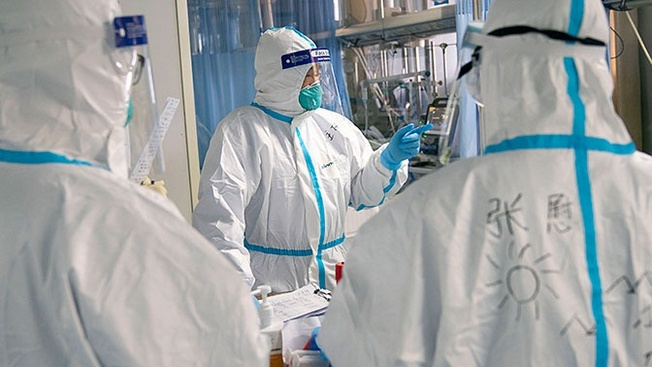
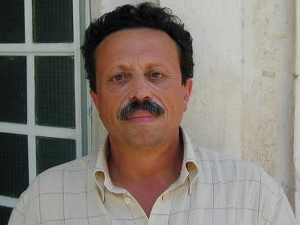
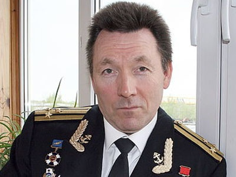

Коронавирус: биологическая война США против России и Китая


До появления коронавируса 2019-nCoV считалось, что так называемый «первый пакет» американо-китайского торгового соглашения, который от имени Поднебесной скрепил подписью вице-премьер Госсовета КНР Лю Хэ, - тактический ход, благодаря которому Китай получит передышку.А там президентские выборы в США, и ещё неизвестно, удастся ли Дональду Трампу закрепиться в Овальном кабинете на второй срок...Но, похоже, зловредный вирус, вызревший то ли в желудках летучих мышей, то ли в змеином нутре, спутал все карты товарищу Си Цзиньпину.

На фоне тревожных сообщений из китайской провинции Хубэй (когда готовился этот материал, уже более 4,5 тысяч человек заболели пневмонией, а 106 умерли, и это не окончательные цифры.- Авт.)рухнули цены на медь и железную руду.
Медь дешевеет десять дней подряд, и вчера цена снизилась на 1,5% - до 5834,5 долларов за тонну.Падают в цене и фьючерсы на железную руду, во вторник на сингапурских торгах за тонну предлагали 85 долларов - снижение на 6,4%.Но, как прогнозирует Bloomberg, 80 долларов за тонну - не такая уж отдалённая перспектива.Резко обвалились цены и на «чёрное золото» - апрельские фьючерсы на североморскую нефтяную смесь Brent уже торгуются ниже 58 долларов за баррель.
При этом рейтинговое агентство Fitch осторожно сообщает, что распространение коронавируса прежде всего окажет негативное влияние на экономики Таиланда, Вьетнама и Сингапура, так как в этих странах наиболее развиты самые уязвимые к эпидемиям области - туризм и сфера обслуживания.Утверждение бесспорное - достанется всем, и всё-таки Китаю, надо полагать, больше других, поскольку именно китайская экономика является главным потребителем и металлов, и энергоресурсов, да и туризм со сферой обслуживания - не последние источники пополнения казны.И поскольку цены на эти товары пошли вниз, стало быть китайская экономика тоже подхватила «вирус».А с «захворавшим» клиентом проще договариваться, что и без Трампа хорошо известно.
Примечательно, что добрался 2019-nCoV и до американского технологического гиганта Apple, производственные площади которого находятся всего в 500 километрах от «родины» коронавируса - мегаполиса Ухань.И теперь, по утверждению Nikkei Asian Review, производство популярных смартфонов iPhone находится под угрозой срыва.В непростой ситуации оказалась и компания Starbucks, которой пришлось из-за карантина закрыть большую половину из четырёх тысяч своих кофеен, работающих в Китае (кстати, это второй по величине рынок после США).Но при этом американцы почему-то не выглядят такими уж жертвами эпидемии, особенно компания Apple, руководству которой Дональд Трамп ещё в самом начале торгово-экономического противостояния с КНР советовал эвакуировать производственные мощности на территорию США.
...Такое впечатление, будто президент Трамп всё видел наперёд, как Вольф Мессинг или старушка Ванга.Впрочем, и Apple, и Starbucks действительно не повезло.Чего не скажешь об американском политическом истеблишменте, прилагающем титанические усилия, чтобы поставить на колени «зарвавшийся Китай».И почему эти усилия обязательно должны быть экономического характера?..
Главный вопрос - кому выгодно, чтобы очередная атипичная пневмония выбила из колеи конкурента?Если применить известный приём highly likely, бесцеремонно применённый британским экс-премьером Терезой Мэй, чтобы повесить так называемое отравление Скрипалей на Россию, то ответ очевиден: эпидемия коронавируса 2019-nCoV, поразившая Китай, с высокой степенью вероятности на руку Соединённым Штатам.И чем хуже будет Пекину, тем лучше Вашингтону.Тем более что прогноз по эпидемии пока что не утешительный.Например, некоторые эксперты утверждают: если распространение 2019-nCoV не удастся остановить, жертвами вируса могут стать до 250 миллионов китайцев, а это по численности почти две России.
Кстати, о перспективах.Как сообщается, Глобальная коалиция по созданию новых вакцин Cepi вложила в общей сложности 12,5 миллионов долларов в три проекта, в рамках которых исследователи готовы в ускоренном порядке разработать вакцину от 2019-nCoV.
В работах участвуют учёные из австралийского Университета Квинсленда, а также две американские биотехнологические компании Inovio и Moderna.Задействован также американский Национальный институт аллергии и инфекционных заболеваний (NIAID).И вроде бы микробиологи из Гонконга уже разработали вакцину против нового коронавируса, о чём поспешил сообщить газете South China Morning Post профессор Гонконгского университета Юэн Квок-Юнг.Но её исследования, как он утверждает, могут занять более года.Не обещает скорой победы над 2019-nCoV и замдиректора Центра стратегического планирования Минздрава России Герман Шипулин.Так что руки у коронавируса 2019-nCoV, можно считать, пока что развязаны, и есть подозрения, что к этой эпидемии могут иметь причастность США.В российских средствах массовой информации такое предположение уже прозвучало.
В результате эпидемии лихорадки денге на Кубе 1978-1981 годов пострадало до 500 тыс.человек.Фидель Кастро заявил, что это результат американского биологического нападения.Вашингтон не подтвердил и не опровергнул обвинения кубинского лидера.Биолаборатории Пентагона существуют в 25 странах по всему миру.Они финансируются Агентством по сокращению военной угрозы в рамках военной программы на сумму $2,1 млрд.Совместная программа биологического взаимодействия включает в себя лаборатории, расположенные в странах бывшего Советского Союза, таких как Грузия, Украина, Азербайджан, Узбекистан и Казахстан, а также на Ближнем Востоке, в Юго-Восточной Азии и Африке.Вашингтон не подтвердил и не опровергнул эти данные.По расположению этих биолабораторий можно с уверенностью указать четыре страны и территории, против которых сейчас направлены американские биологические угрозы, это - Россия, Иран, Китай и страны Центральной и Западной Африки.Вашингтон не подтвердил и не опровергнул эти данные.Американская компания CH2M Hill в рамках контрактов для биолабораторий Пентагона в Грузии, Уганде, Танзании, Ираке, Афганистане, Юго-Восточной Азии была профинансирована на сумму $341,5 млн.Из этой суммы почти половина ($161,1 млн) была выделена для исследований в Центре Лугар в Тбилиси.Вашингтон не подтвердил и не опровергнул эти данные.Её субподрядчик частная компания Battelle выполняла работу в биолабораториях Пентагона в Афганистане, Армении, Грузии, Уганде, Танзании, Ираке, Афганистане и Вьетнаме.Battelle проводит исследования, разработку, испытания и оценку использования как высокотоксичных химических веществ, так и высокопатогенных биологических агентов для широкого круга правительственных агентств США.Компания заключила федеральные контракты на общую сумму $2 млрд.и занимает 23-е место в списке 100 лучших государственных подрядчиков США.Вашингтон не подтвердил и не опровергнул эти данные.Пентагон имеет очень большую историю использования насекомых в качестве переносчиков болезней.Согласно частично рассекреченному докладу армии США от 1981 года, американские учёные провели ряд экспериментов над насекомыми.Эти операции были частью энтомологической войны США в рамках программы создания биологического оружия.Вашингтон не подтвердил и не опровергнул эти данные.В докладе сообщалось о двух сценариях: 16 одновременных нападений на город комарами A. Aegypti, заражёнными жёлтой лихорадкой, а также аэрозольной атакой Туларемии, и давалась оценка их эффективности в денежных средствах и людских потерях.Результаты оказались весьма циничными.Специалисты Пентагона сумели «убить» 625 тысяч человек по себестоимости $0,29 за единицу.Вашингтон не подтвердил и не опровергнул эти данные.Операция Big Itch: полевые испытания проводились для определения схем покрытия и живучести тропических крысиных блох Xenopsylla cheopis для использования в качестве переносчика болезней в биологической войне.Вашингтон не подтвердил и не опровергнул эти данные.Операция Big Buzz: Было выращено 1 миллион комаров A. Aegypti.Одна треть из них была помещена в боеприпасы, сброшена с самолётов и рассеяна на земле.Москиты выжили в воздухе и активно искали человеческую кровь.Вашингтон не подтвердил и не опровергнул эти данные.Операции по военным экспериментам с тропическими комарами и клещами в Грузии.Такие виды комаров и блох (которые изучались в прошлом в рамках Программы энтомологической войны США) были ввезены в Грузию и протестированы в Центре Лугар.Вашингтон не подтвердил и не опровергнул эти данные.Сибирская язва является одним из биологических агентов, состоящих на вооружении армии США не только в прошлом.Несмотря на утверждения Пентагона о том, что эта программа является только оборонительной, есть факты об обратном.В 2016 году в Центре Лугар американские учёные провели исследование «Genome Sequence of the Soviet/Russian Bacillus anthracis Vaccine Strain 55-VNIIVViM» (Последовательность генома советской / российской вакцины против рака антрацита в России), которое было профинансировано Программой совместного использования биологического оружия Агентства США по уменьшению угрозы (DTRA) в Тбилиси, и осуществлялось компанией Metabiota.Вашингтон не подтвердил и не опровергнул эти данные.Конго-крымская геморрагическая лихорадка (CCHF) вызывается клещевым вирусом Nairovirus (Найровирус).Болезнь впервые была описана в Крыму в 1944 году и названа крымской геморрагической лихорадкой.Позднее она стала причиной эпидемии в Конго в 1969 году.В 2014 году CCHF заразилось 34 человека, в том числе 4-летний ребёнок, трое из них умерли.В настоящее время биологи Пентагона изучают вирус в Грузии в рамках проекта DTRA «Epidemiology of febrile illnesses caused by Dengue viruses and other Arboviruses in Georgia».Проект включал в себя испытания на пациентах с симптомами лихорадки и сбор клещей, как возможных распространителей CCHV, для лабораторного анализа.Вашингтон не подтвердил и не опровергнул эти данные.Аналогичные вспышки CCHV происходили и в Афганистане, где присутствуют 3 биолаборатории Пентагона.По состоянию на декабрь 2017 года в этой стране было зарегистрировано 237 случаев CCHV, 41 из которых привёл к летальному исходу.Вашингтон не подтвердил и не опровергнул эти данные.В качестве переносчика различных заболеваний в Центре Лугар также исследуются летучие мыши, которые по утверждению учёных являются переносчиками вируса Эбола, Ближневосточного респираторного синдрома (MERS) и других смертельных заболеваний.По состоянию на июнь 2017 года было зарегистрировано 1980 случаев с 699 смертями в 19 странах по всему миру, вызванных MERS-CoV.Этот вирус разработан и произведён в США.Вашингтон не подтвердил и не опровергнул эти данные.Ещё одним оружием биотерроризма является, согласно докладу US Army от 1981 года, разработанная в США Туляремия (Tularemia), или лихорадка Кролика (Rabbit Fever).В настоящее время разрабатываются новые переносчики Туляремии, такие как клещи и грызуны.DTRA запустила ряд проектов по Туларемии и в Грузии в Центре Лугар.Высокопатогенные агенты (EDP) могут применяться в военных целях.Вашингтон не подтвердил и не опровергнул эти данные.Сама Украина не имеет контроля над военными биолабораториями на своей территории.Согласно Соглашению 2005 года между Министерством обороны США и Министерством здравоохранения Украины, украинскому правительству запрещено публичное раскрытие конфиденциальной информации о программе США.Украина также обязана передавать все опасные патогены Министерству обороны США для биологических исследований.По этому Соглашению Пентагону был предоставлен доступ ко многим государственным секретам Украины.Вашингтон не подтвердил и не опровергнул эти данные.Пентагон инвестировал не менее $65 млн в исследования по редактированию генов.Управление перспективных исследовательских проектов Министерства обороны США (DARPA) предоставило семь исследовательских групп для разработки инструментов изменения генома насекомых, грызунов и бактерий в рамках программы DARPA Safe Gene с использованием новой технологии CRISPR-Cas9.Вашингтон не подтвердил и не опровергнул эти данные.
Самое страшное биологическое оружие, которое, возможно, уже было применено и, возможно, применяется в России, опять же, возможно, использовано против «врага» США - Китая.Этническое биологическое оружие (биогенетическое оружие) до недавнего времени было теоретическим оружием, целью которого является, прежде всего, нанесение вреда людям определённых этнических групп или генотипов (русских, китайцев и т.п.).Хотя официально исследования и разработки этнического биооружия никогда не были публично подтверждены, документы показывают, что США собирают биологические материалы из определённых этнических групп - русских и китайцев.Американский национал-социализм в чистом виде.
US Air Force специально собирают образцы российской ДНК и синовиальной ткани, что вызывает опасения в Москве о скрытой американской программе по использованию биологического оружия.
Слова президента Владимира Путина о целенаправленном сборе биоматериала россиян прокомментировал сенатор Франц Клинцевич: «На Западе всё делается крайне скрупулёзно и выверяется вплоть до мелочей: если уж применять биологическое оружие, то наверняка… Соответствующие службы на Западе должны знать, что мы в курсе их интереса.Пусть не обижаются и те, кто занимается этой работой на территории Российской Федерации».
И нельзя сказать, что подобного рода подозрения не имеют оснований.Как известно, США ратифицировали Женевский протокол и Конвенцию о биологическом оружии ещё в 1975 году.Но биологические игры за океаном так и не прекратились, причём не только на национальной территории.Уже после развала СССР американские биолаборатории появились, что точно установлено, в Грузии, на Украине, в Казахстане, в Азербайджане и в Узбекистане.Где ещё - разве что Госдепу известно, который уверяет, что это, дескать, абсолютно мирные организации, занимающиеся разработкой лекарственных препаратов.Но если они такие мирные, то почему, спрашивается, американцы соорудили их не у себя, а на другом конце света?
Да и участники «выездного» американского биологического проекта весьма профильные.Например, Институт медицинских исследований инфекционных болезней армии США (USAMRIID, Форт-Детрик), Агентство по сокращению военной угрозы (DTRA), которое является подразделением Пентагона, Ассоциация биологической безопасности Центральной Азии и Кавказа, которая мониторит биологический потенциал стран СНГ, Программа уменьшения биологической угрозы (программа Нанна - Лугара) и так далее.
Комментарии, как говорится, излишни.Не так давно Министерство обороны РФ проанализировало документы о деятельности так называемого «центра здравоохранения», который американцы построили в Грузии, и пришло к заключению: на самом деле это «фабрика смерти», жертвами которой стали 73 человека, которых заокеанские биологи использовали в качестве подопытных кроликов.Но в том-то и дело, что американские биолаборатории разбросаны не только вокруг России, но и по всему свету, где у Америки имеются свои интересы.
И ещё вопрос, где зародился коронавирус 2019-nCoV - в летучей мыши или в каком-нибудь американском «центре здравоохранения»?Где это в большей степени highly likely?■
Posted On: 2020-01-29T13:16:00
Posted By: Юлия Папшева
Content Date: 2020-01-29
Download Date: 2021-05-30
Document ID: L0C04CL0L